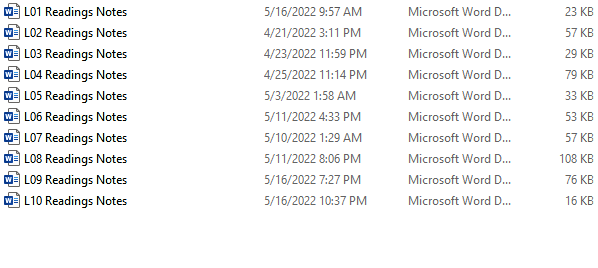
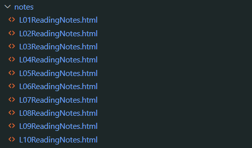
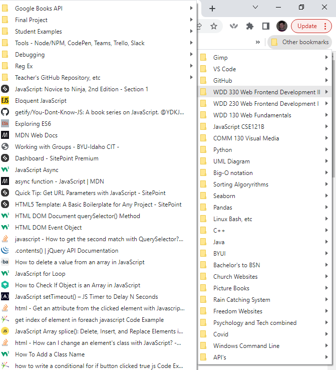
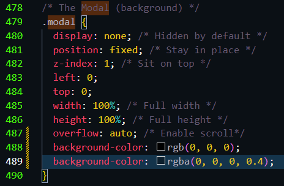
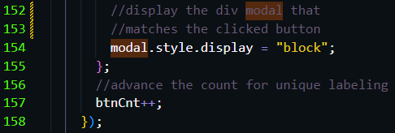
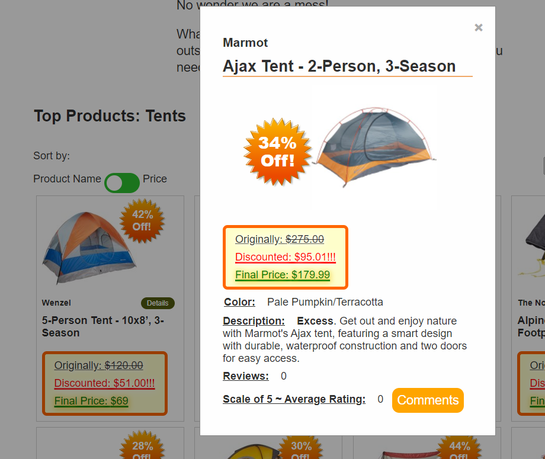

Example #1 Link
 Example #2 Link
Example #3 Link

CSS
JavaScript

Finding Resources
2. becoming more dexterous at exploring your environment
(Student is adept at finding other resources to fill gaps that they recognize in their knowledge of the subject area. Student successfully finds the answers to their 'what if?' questions.)
It has become second nature for me to search for answers when I run into a coding issue that I don't know the answer to. I am also building a huge library of resources to reference to help me remember answers and solutions to coding problems. Whenever I came across something I wasn't sure how to do for a SleepOutside Trello Board assignment card or for a feature on the CloudShelf final group project I looked to find the solutions on the internet, in files I've saved on my browser, or in the thorough notes I took from our reading.
Example #1
The first example of me finding other resources to fill in gaps of knowledge in how to do a particular coding task is the resources I have built for myself with my thorough note taking. In addition to having these notes in a searchable word document, I took the initiative to convert the notes into web pages that I can easily reference now as well.
Example #2
The second example of me finding other resources to overcome the obstacle of gaps in my knowledge of how to accomplish a coding task are the files of information I have started to accumulate in my browser. I have a ton of references now and I am continuing to organize the information to make it as easily accessible as possible.
Example #3
The third example of me finding other resources when asking the "what if" questions is how I use the internet as a resource to find answers to my questions. A good example of this in my work was the (Quick lookup card) that I did. It asked me to do a modal pop-up from a quick view button. I had no idea how to do that when I started. So, I did a search on the internet, found examples, one which I attached to the card to model my work after and used a w3schools tutorial to learn how to do it. With that resource of help that I found; I was able to successfully complete the task.